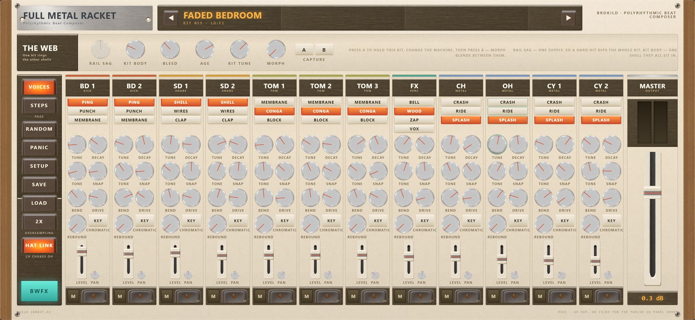

Six instruments and one effect, in a single download.
Everything Brokild makes, with its manuals and its standalones. They are not a product line — they were built one at a time, each to answer a different question — but they share a rack of effects, a patch folder and a way of working: nothing in any of them is asserted, every claim is measured by a bench that renders real audio and reads the numbers off it.

Each folder holds the plugin, the standalone and its manual. Every one of them is also downloadable on its own if you would rather take them one at a time.
A synthesiser you play by moving a cursor across a photograph. The colours under the cursor are the sound — hue, saturation and brightness map onto the oscillator, the filter and the effects, so a picture is a patch and moving across it is a performance.
Load your own photos; a recorded cursor path becomes a phrase that plays itself.
Five noise cells, a playable filter, three traps — and a SIGIL, a number from 0 to 63 that seeds eight modulation wires deterministically. The same sigil is the same machine, on any computer, forever.
The panel is cryptic on purpose. The knobs are named ALEPH and BETH and the real values only appear while you turn one. There is a legend, if you can find it.
Three layers at once: a drone city of nine detuned saws and filtered rain, an eight-voice polysynth with a ladder filter, and a sixteen-step sequencer built from a six-bit seed. At least one layer is always playing.
A mood organ: dial a number from 0 to 999 and get an instrument and a line of text that belong to each other. All thousand are distinct, and a handful are Philip K. Dick's own codes.
An analogue monosynth sitting between the MS-20 and the Moog. Two oscillators you can push into instability, drift and injection-lock, and one filter with three circuits on a switch — two Sallen-Key tempers and a transistor ladder.
An eight-cable patch bay on a wing that folds out of the side, including the MS-20 trick of patching the amplifier back into the filter.
Sixteen detuned oscillators in two armies of eight, crossfaded by a single fader — THE WAR — which can be set to take up to five minutes to cross.
The panel visibly ages as you play it. There is a service bay if you want the scars repaired, and a slider that runs the sixteen from perfectly locked to completely adrift.
An analogue drum machine whose twelve voices share a power rail, a shell and a bleed web — so a hard kick dips the whole machine in pitch as well as level, and hitting the snare rings the toms.
A thirty-two step sequencer with a last step per lane, so polyrhythms cost one number. Two hundred generated kits and a fader that morphs between any two.
A multiband distortion. One to five bands, each running one of sixteen algorithms, each with its own limiter — and each level-matched by measurement, so turning DRIVE up changes what a band sounds like without changing how loud it is.
The front panel comes off. Underneath is a patch bay where any band's audio or envelope can drive any other band's knobs, or move the crossovers themselves.
The same global effects behind a teal globe in every instrument — saturation, phaser, chorus, gate, echo, reverb, rotary, a step glitcher and more. A rack built in one opens in any of the others. Empty by default, and adds nothing until you put something in it.
Not effects on the mix — they reach inside and detune, pan, sag and dull the voices themselves, so the instrument plays differently rather than being processed differently.
Every plugin keeps its patches in Documents\Brokild patches, a folder each
under one roof — deliberately not beside the installed plugin, which is somewhere an
installer can reach and replace.
Each one is built against an offline bench that renders real audio and measures it — tuning in cents, aliasing in decibels, timing in samples. The numbers in the manuals come from that, not from anybody’s opinion.
<name>.vst3 folder —
the whole folder, not just the file inside it — into
C:\Program Files\Common Files\VST3\. A sub-folder such as
...\VST3\Brokild\ is fine and tidier; hosts look inside..exe. No installation at
all.